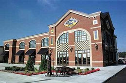

Just as every Elvis fan longs to visit Graceland, SPAM fans worldwide now have their own pilgrimage to make! In Austin, Minnesota a 16,500 square-foot SPAM Museum opened in September 2001!
Museum visitors will be welcomed to the world of SPAM, with a variety of interactive and educational games, fun exhibits and remarkable video presentations!
In addition, until December 2004 we are showing the special exhibit "The Nigerian Scam: Fantasy or Reality?", sponsored by Mr. Ben Ahore from the Central Bank of Nigeria!
Starting January 2005 we are going to host the exhibit: "Viagra: So many ways to spell it!", sponsored by the Regalis-Cialis coalition!
The address of the museum is:
1937 SPAM BoulevardAustin, Minnesota 55912
Call: 1-800-LUV-SPAM (1-800-588-7726)
MUSEUM HOURS
May 1 to Labor Day: Mon-Sat. 10 a.m.-5 p.m.; Sun. 12 Noon-4 p.m.!
Labor Day to April 30: Tues.-Sat. 10 a.m.-5 p.m.; Sun. 12 Noon-4 p.m., Closed Mondays!
NO ADMISSION FEE!
The SPAM Museum is closed New Year's Day, Easter, Thanksgiving, Christmas Eve Day and Christmas Day!
You can also search through the SPAM Museum collection using our search page!